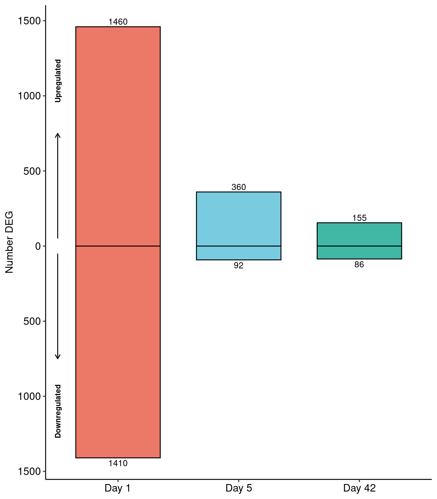

Last updated: 2019-12-06
Checks: 6 1
Knit directory: bentsen-rausch-2019/
This reproducible R Markdown analysis was created with workflowr (version 1.4.0). The Checks tab describes the reproducibility checks that were applied when the results were created. The Past versions tab lists the development history.
Great! Since the R Markdown file has been committed to the Git repository, you know the exact version of the code that produced these results.
The global environment had objects present when the code in the R Markdown file was run. These objects can affect the analysis in your R Markdown file in unknown ways. For reproduciblity it’s best to always run the code in an empty environment. Use wflow_publish or wflow_build to ensure that the code is always run in an empty environment.
The following objects were defined in the global environment when these results were created:
| Name | Class | Size |
|---|---|---|
| data | environment | 56 bytes |
| env | environment | 56 bytes |
The command set.seed(20191021) was run prior to running the code in the R Markdown file. Setting a seed ensures that any results that rely on randomness, e.g. subsampling or permutations, are reproducible.
Great job! Recording the operating system, R version, and package versions is critical for reproducibility.
Nice! There were no cached chunks for this analysis, so you can be confident that you successfully produced the results during this run.
Great job! Using relative paths to the files within your workflowr project makes it easier to run your code on other machines.
Great! You are using Git for version control. Tracking code development and connecting the code version to the results is critical for reproducibility. The version displayed above was the version of the Git repository at the time these results were generated.
Note that you need to be careful to ensure that all relevant files for the analysis have been committed to Git prior to generating the results (you can use wflow_publish or wflow_git_commit). workflowr only checks the R Markdown file, but you know if there are other scripts or data files that it depends on. Below is the status of the Git repository when the results were generated:
Ignored files:
Ignored: .Rproj.user/
Ignored: analysis/figure/
Ignored: test_files/
Untracked files:
Untracked: analysis/figure_6.Rmd
Untracked: analysis/olig_ttest_padj.csv
Untracked: code/sc_functions.R
Untracked: data/bulk/
Untracked: data/fgf_filtered_nuclei.RDS
Untracked: data/figures/
Untracked: data/filtglia.RDS
Untracked: data/glia/
Untracked: data/lps1.txt
Untracked: data/mcao1.txt
Untracked: data/mcao_d3.txt
Untracked: data/mcaod7.txt
Untracked: data/mouse_data/
Untracked: data/neur_astro_induce.xlsx
Untracked: data/neuron/
Untracked: data/synaptic_activity_induced.xlsx
Untracked: olig_ttest_padj.csv
Untracked: output/agrp_pcgenes.csv
Untracked: output/all_wc_markers.csv
Untracked: output/allglia_wgcna_genemodules.csv
Untracked: output/bulk/
Untracked: output/fig.RData
Untracked: output/fig4_part2.RData
Untracked: output/glia/
Untracked: output/glial_markergenes.csv
Untracked: output/integrated_all_markergenes.csv
Untracked: output/integrated_neuronmarkers.csv
Untracked: output/neuron/
Untracked: suppglia.Rmd
Untracked: wc_de.pdf
Unstaged changes:
Modified: analysis/9_wc_processing.Rmd
Modified: analysis/figure_1.Rmd
Modified: analysis/index.Rmd
Note that any generated files, e.g. HTML, png, CSS, etc., are not included in this status report because it is ok for generated content to have uncommitted changes.
These are the previous versions of the R Markdown and HTML files. If you’ve configured a remote Git repository (see ?wflow_git_remote), click on the hyperlinks in the table below to view them.
| File | Version | Author | Date | Message |
|---|---|---|---|---|
| Rmd | f5c47a7 | Full Name | 2019-12-06 | wflow_publish(“analysis/figure_7.Rmd”) |
library(DESeq2)Loading required package: S4VectorsLoading required package: stats4Loading required package: BiocGenericsLoading required package: parallel
Attaching package: 'BiocGenerics'The following objects are masked from 'package:parallel':
clusterApply, clusterApplyLB, clusterCall, clusterEvalQ,
clusterExport, clusterMap, parApply, parCapply, parLapply,
parLapplyLB, parRapply, parSapply, parSapplyLBThe following objects are masked from 'package:stats':
IQR, mad, sd, var, xtabsThe following objects are masked from 'package:base':
anyDuplicated, append, as.data.frame, basename, cbind,
colMeans, colnames, colSums, dirname, do.call, duplicated,
eval, evalq, Filter, Find, get, grep, grepl, intersect,
is.unsorted, lapply, lengths, Map, mapply, match, mget, order,
paste, pmax, pmax.int, pmin, pmin.int, Position, rank, rbind,
Reduce, rowMeans, rownames, rowSums, sapply, setdiff, sort,
table, tapply, union, unique, unsplit, which, which.max,
which.min
Attaching package: 'S4Vectors'The following object is masked from 'package:base':
expand.gridLoading required package: IRangesLoading required package: GenomicRangesLoading required package: GenomeInfoDbLoading required package: SummarizedExperimentLoading required package: BiobaseWelcome to Bioconductor
Vignettes contain introductory material; view with
'browseVignettes()'. To cite Bioconductor, see
'citation("Biobase")', and for packages 'citation("pkgname")'.Loading required package: DelayedArrayLoading required package: matrixStats
Attaching package: 'matrixStats'The following objects are masked from 'package:Biobase':
anyMissing, rowMediansLoading required package: BiocParallel
Attaching package: 'DelayedArray'The following objects are masked from 'package:matrixStats':
colMaxs, colMins, colRanges, rowMaxs, rowMins, rowRangesThe following objects are masked from 'package:base':
aperm, applylibrary(tidyverse)── Attaching packages ────────────────────────────────── tidyverse 1.2.1 ──✔ ggplot2 3.2.1 ✔ purrr 0.3.2
✔ tibble 2.1.3 ✔ dplyr 0.8.3
✔ tidyr 0.8.3 ✔ stringr 1.4.0
✔ readr 1.3.1.9000 ✔ forcats 0.4.0 ── Conflicts ───────────────────────────────────── tidyverse_conflicts() ──
✖ dplyr::collapse() masks IRanges::collapse()
✖ dplyr::combine() masks Biobase::combine(), BiocGenerics::combine()
✖ dplyr::count() masks matrixStats::count()
✖ dplyr::desc() masks IRanges::desc()
✖ tidyr::expand() masks S4Vectors::expand()
✖ dplyr::filter() masks stats::filter()
✖ dplyr::first() masks S4Vectors::first()
✖ dplyr::lag() masks stats::lag()
✖ ggplot2::Position() masks BiocGenerics::Position(), base::Position()
✖ purrr::reduce() masks GenomicRanges::reduce(), IRanges::reduce()
✖ dplyr::rename() masks S4Vectors::rename()
✖ purrr::simplify() masks DelayedArray::simplify()
✖ dplyr::slice() masks IRanges::slice()library(ggplot2)
library(AnnotationDbi)
Attaching package: 'AnnotationDbi'The following object is masked from 'package:dplyr':
selectlibrary(org.Mm.eg.db)library(fgsea)Loading required package: Rcpplibrary(AnnotationDbi)
library(org.Mm.eg.db)
library(gProfileR)
library(ggrepel)
library(grid)
library(ggsignif)
library(cowplot)
********************************************************Note: As of version 1.0.0, cowplot does not change the default ggplot2 theme anymore. To recover the previous behavior, execute:
theme_set(theme_cowplot())********************************************************library(here)here() starts at /nfsdata/projects/dylan/bentsen-rausch-2019source(here("code/sc_functions.R"))
genecountlist<-list.files(here("data/bulk/"),
pattern = ".*Bentsen.*ReadsPerGene.out.tab", full.names = T)
genecountlist %>% str_remove_all("bulk_|SHU_|r2_") %>%
str_extract(pattern = "G.*Bentsen.*_RNA") %>%
str_split("_", simplify = T) %>% data.frame() %>%
dplyr::select(4:6) %>%
dplyr::rename(prep=X4, treat=X5, day=X6) %>%
unite("group",c(treat,day), remove = F) -> meta
genecounts<-lapply(genecountlist, function(x)
read.table(x, sep="\t", skip = 4, row.names = 1,
colClasses = c("character", "NULL", "NULL" , "numeric")))
genemat <- do.call("cbind",genecounts)
colnames(genemat) <- paste0("Sample_",seq_len(dim(genemat)[2]))
genemat %>% dplyr::select(7:30) %>%
mutate(gene = mapIds(org.Mm.eg.db, keys=rownames(genemat), keytype = "ENSEMBL", column="SYMBOL")) %>%
na.omit() %>% filter(!duplicated(gene)) %>% column_to_rownames("gene") -> genemat'select()' returned 1:many mapping between keys and columnsmeta[c(7:30),] -> metaload(here("data/bulk/dds.RData"))
counts(dds) %>% data.frame() %>%
mutate(gene = mapIds(org.Mm.eg.db, keys=rownames(counts(dds)), keytype = "ENSEMBL", column="SYMBOL")) %>%
na.omit() %>% filter(!duplicated(gene)) %>% column_to_rownames("gene") -> nn_genemat'select()' returned 1:many mapping between keys and columnsmerge(genemat, nn_genemat, by="row.names") %>% column_to_rownames("Row.names") -> countmat
group <- if_else(condition = grepl("FGF", as.character(dds$Treatment_abbrv)), true = "FGF1_d5", false = "veh_d5")
prep <- rep("NN", 23)
seq_batch <- rep("run1", 23)
nn <-data.frame("group"=group, "prep"=prep)
nn %>% separate(group, into = c("treat","day"), remove = F) -> meta_nn
meta <- bind_rows(meta, meta_nn)Warning in bind_rows_(x, .id): binding character and factor vector,
coercing into character vectorWarning in bind_rows_(x, .id): binding factor and character vector,
coercing into character vectorWarning in bind_rows_(x, .id): binding character and factor vector,
coercing into character vectorWarning in bind_rows_(x, .id): binding factor and character vector,
coercing into character vectorWarning in bind_rows_(x, .id): binding character and factor vector,
coercing into character vectorWarning in bind_rows_(x, .id): Unequal factor levels: coercing to characterWarning in bind_rows_(x, .id): binding character and factor vector,
coercing into character vector
Warning in bind_rows_(x, .id): binding character and factor vector,
coercing into character vectordds <- DESeqDataSetFromMatrix(as.matrix(countmat), colData = meta, design = ~ 0 + group)converting counts to integer modeWarning in DESeqDataSet(se, design = design, ignoreRank): some variables in
design formula are characters, converting to factorskeep <- rowSums(counts(dds) >= 10) > 20
dds <- dds[keep,]
dds <- DESeq(dds)estimating size factorsestimating dispersionsgene-wise dispersion estimatesmean-dispersion relationshipfinal dispersion estimatesfitting model and testing-- replacing outliers and refitting for 4 genes
-- DESeq argument 'minReplicatesForReplace' = 7
-- original counts are preserved in counts(dds)estimating dispersionsfitting model and testingres_1 <- results(dds, contrast = c("group","FGF1_d1","veh_d1"))
res_5 <- results(dds, contrast = c("group","FGF1_d5","veh_d5"))
res_42 <- results(dds, contrast = c("group","FGF1_d42","veh_d42"))
res_42 %>% as.data.frame() %>% add_rownames("gene") %>%
mutate(entrez = mapIds(org.Mm.eg.db, keys=gene, column="ENTREZID", keytype = "SYMBOL")) %>%
mutate(order = log2FoldChange*-log10(pvalue)) %>% arrange(-stat) %>% na.omit -> res_42Warning: Deprecated, use tibble::rownames_to_column() instead.'select()' returned 1:many mapping between keys and columnswrite_csv(res_42, path = here("output/bulk/d42deg.csv"))
res_5 %>% as.data.frame() %>% add_rownames("gene") %>%
mutate(entrez = mapIds(org.Mm.eg.db, keys=gene, column="ENTREZID", keytype = "SYMBOL")) %>%
mutate(order = log2FoldChange*-log10(pvalue)) %>% arrange(-stat) %>% na.omit -> res_5Warning: Deprecated, use tibble::rownames_to_column() instead.'select()' returned 1:many mapping between keys and columnswrite_csv(res_5, path = here("output/bulk/d5deg.csv"))
res_1 %>% as.data.frame() %>% add_rownames("gene") %>%
mutate(entrez = mapIds(org.Mm.eg.db, keys=gene, column="ENTREZID", keytype = "SYMBOL")) %>%
mutate(order = log2FoldChange*-log10(pvalue)) %>% arrange(-stat) %>% na.omit -> res_1Warning: Deprecated, use tibble::rownames_to_column() instead.'select()' returned 1:many mapping between keys and columnsresdf <- bind_rows(d1=res_1, d5=res_5, d42=res_42, .id = "id")
write_csv(res_1, path = here("output/bulk/d1deg.csv"))
p1 <- ggplot(res_1, aes(x=log2FoldChange, y=-log10(pvalue))) + geom_point()
p1_adj <- ggplot(res_1, aes(x=log2FoldChange, y=-log10(padj))) + geom_point()
p5 <- ggplot(res_5, aes(x=log2FoldChange, y=-log10(pvalue))) + geom_point()
p5_adj <- ggplot(res_5, aes(x=log2FoldChange, y=-log10(padj))) + geom_point()
p42 <- ggplot(res_42, aes(x=log2FoldChange, y=-log10(pvalue))) + geom_point()
p42_adj <- ggplot(res_42, aes(x=log2FoldChange, y=-log10(padj))) + geom_point()
resdf %>% dplyr::mutate(dir = ifelse(log2FoldChange>0, yes="1", no="2")) %>% dplyr::filter(pvalue<0.05, abs(log2FoldChange)>0.5) %>%
dplyr::group_by(id,dir) %>% dplyr::count() %>%
mutate(n = ifelse(dir==2, yes = -n, no = n)) %>% ungroup() %>% mutate(id = fct_relevel(id,"d1","d5","d42")) -> degnum
ggplot(degnum, aes(x=id, y=n)) +
geom_bar(aes(x=id,y=n,fill=id), stat="identity",position="identity", colour="black", alpha=0.75, width=0.7) +
geom_text(data = dplyr::filter(degnum, n<0), aes(label=abs(n)), vjust=1.3, size=3.5) +
geom_text(data = dplyr::filter(degnum, n>0), aes(label=abs(n)), vjust=-.3, size=3.5) +
ggsci::scale_fill_npg() +
scale_y_continuous(labels=abs) +
scale_x_discrete(labels=c("d1" = "Day 1", "d5" = "Day 5","d42" = "Day 42")) +
coord_cartesian(clip = "off") + ggpubr::theme_pubr(legend="none") +
ylab("Number DEG") + xlab(NULL) +
annotate(geom = "segment", y = 50, yend = 750, x = .5, xend = .5, arrow=arrow(length = unit(2, "mm")), size=0.5) +
annotate(geom = "segment", y = -50, yend = -750, x = .5, xend = .5, arrow=arrow(length = unit(2, "mm")), size=0.5) +
annotate(geom = "text", y = c(1100,-1100), x = .5, label = c("Upregulated", "Downregulated"), angle=90,
color="black", size=3, fontface="bold") -> degnum_plot
degnum_plot
rank <- data.frame(gene = res_1$gene, rank1 = seq(1:nrow(res_1)), stat1 = res_1$stat)
rank5 <- data.frame(gene = res_5$gene, rank5 = seq(1:nrow(res_5)), stat5 = res_5$stat)
ranks <- merge(rank5, rank, by="gene")
ranks$unigene <- mapIds(org.Mm.eg.db, keys = as.character(ranks$gene), keytype = "SYMBOL", column = "UNIGENE")'select()' returned 1:many mapping between keys and columnsranks$gene <- as.character(ranks$gene)
ranks <- arrange(ranks, rank5)
ranks <- ranks[,c(6,1,2,4,3,5)]
write.table(ranks, here("data/bulk/rrho/ranks1ranks5.txt"),quote = F, row.names = F, sep="\t")read.table(here("data/bulk/rrho/rank5rank1/rankrank.regionA.txt")) %>% pull(V2) %>% as.character() -> genes
genes <- genes[-1]
sum(rank5$stat5>0)-length(genes)[1] 5148sum(rank$stat1>0)-length(genes)[1] 5052venn.plot <- VennDiagram::draw.pairwise.venn(area1 = sum(ranks$stat5>0), area2 = sum(ranks$stat1>0),
cross.area = length(genes), scaled = T, euler.d = T)pdf(file = here("data/figures/fig7/rank1rank5Venn_diagram_bothup.pdf"))
grid.draw(venn.plot)
dev.off()png
2 gprofiler(genes, organism = "mmusculus", src_filter = c("GO:BP","KEGG","REAC"),significant = T, ordered_query = T,
max_set_size = 300, min_set_size = 10, hier_filtering = "strong") %>% arrange(p.value) -> res
write_csv(res, path = here("data/bulk/rrho/goterms_coup_d1d5.csv"))
ggplot(res %>% slice(1:5), aes(x=fct_reorder(str_wrap(str_to_sentence(term.name),30), -p.value), y=-log10(p.value))) +
geom_col(width=1, colour="black", fill="gray80") +
theme(axis.text.x = element_text(angle=45, hjust=1)) + ylab(expression(bold(-log[10]~pvalue))) +
coord_flip() + ggpubr::theme_pubr() + xlab(NULL) + theme(axis.text.y = element_text(lineheight=0.75)) + theme_figure -> rank5rank1a
rank5rank1aread.table(here("data/bulk/rrho/rank5rank1/rankrank.regionB.txt")) %>% pull(V2) %>% as.character() -> genes
genes <- genes[-1]
sum(rank5$stat5>0)-length(genes)[1] 5472sum(rank$stat1>0)-length(genes)[1] 5376venn.plot <- VennDiagram::draw.pairwise.venn(area1 = sum(rank5$stat5>0), area2 = sum(rank$stat1>0),
cross.area = length(genes), scaled = T, euler.d = T)pdf(file = here("data/figures/fig7/rank1rank5Venn_diagram_d1upd5down.pdf"))
grid.draw(venn.plot)
dev.off()png
2 gprofiler(genes, organism = "mmusculus",
src_filter = c("GO:BP","KEGG","REAC"),significant = T, ordered_query = T,
max_set_size = 300, min_set_size = 10, hier_filtering = "strong") %>% arrange(p.value) -> res
write_csv(res, path = here("data/bulk/rrho/goterms_upd1downd5.csv"))
ggplot(res %>% slice(1:5), aes(x=fct_reorder(str_wrap(str_to_sentence(term.name),30), -p.value), y=-log10(p.value))) +
geom_col(width=1, colour="black", fill="gray80") +
theme(axis.text.x = element_text(angle=45, hjust=1)) + ylab(expression(bold(-log[10]~pvalue))) +
coord_flip() + ggpubr::theme_pubr() + xlab(NULL) + theme(axis.text.y = element_text(lineheight=0.75)) + theme_figure -> rank5rank1b
rank5rank1brank <- data.frame(gene = res_5$gene, rank5 = seq(1:nrow(res_5)), stat5 = res_5$stat)
rank42 <- data.frame(gene = res_42$gene, rank42 = seq(1:nrow(res_42)), stat42 = res_42$stat)
ranks <- merge(rank42, rank, by="gene")
ranks$gene <- as.character(ranks$gene)
ranks$unigene <- mapIds(org.Mm.eg.db, keys = as.character(ranks$gene), keytype = "SYMBOL", column = "UNIGENE")'select()' returned 1:many mapping between keys and columnsranks <- arrange(ranks, rank5)
ranks <- ranks[,c(6,1,4,2,5,3)]
write.table(ranks, here("data/bulk/rrho/ranks42.txt"),quote = F, row.names = F, sep="\t")read.table(here("data/bulk/rrho/rank5rank42/rankrank.regionC.txt")) %>% pull(V2) %>% as.character() -> genes
genes <- genes[-1]
venn.plot <- VennDiagram::draw.pairwise.venn(area1 = sum(rank5$stat5>0),
area2 = sum(rank42$stat42<0),
cross.area = length(genes),
scaled = T, euler.d = T)pdf(file = here("data/figures/fig7/rank5rank42Venn_diagram_d5upd42down.pdf"))
grid.draw(venn.plot)
dev.off()png
2 gprofiler(genes, organism = "mmusculus",
src_filter = c("GO:BP","KEGG","REAC"),significant = T, ordered_query = T,
max_set_size = 300, min_set_size = 10, hier_filtering = "strong") %>% arrange(p.value) -> res
write_csv(res, path = here("data/bulk/rrho/goterms_upd5downd42.csv"))
ggplot(res %>% slice(1:5), aes(x=fct_reorder(str_wrap(str_to_sentence(term.name),30), -p.value), y=-log10(p.value))) +
geom_col(width=1, colour="black", fill="gray80") +
theme(axis.text.x = element_text(angle=45, hjust=1)) + ylab(expression(bold(-log[10]~pvalue))) +
coord_flip() + ggpubr::theme_pubr() + xlab(NULL) + theme(axis.text.y = element_text(lineheight=0.75)) + theme_figure -> rank5rank42c
rank5rank42c# GO term analysis of bulk data
res_42 %>% filter(pvalue < 0.05, abs(log2FoldChange)>0.5) %>% pull(gene) %>%
gProfileR::gprofiler(., organism = "mmusculus", src_filter = c("GO:BP","KEGG","REAC"),
hier_filtering = "strong", min_isect_size = 3,significant = T,
min_set_size = 5, max_set_size = 300, correction_method = "fdr",
custom_bg = rownames(dds)) %>%
arrange(p.value) -> goup_42
write_csv(res, path = here("output/bulk/goterms_d42.csv"))
goup_42 %>% dplyr::select(domain, term.name, term.id, p.value, intersection, overlap.size) %>%
separate(intersection, into = c(paste0("gene", 1:max(goup_42$overlap.size)), remove=T)) %>%
reshape2::melt(id.vars=c("domain", "term.name","term.id", "p.value","overlap.size")) %>% na.omit() %>%
dplyr::select(-variable) %>%
dplyr::mutate(dir = ifelse(res_42[match(value, toupper(res_42$gene)),"log2FoldChange"] > 0, yes = 1, no = -1)) %>%
dplyr::group_by(term.name, term.id, p.value) %>%
dplyr::summarize(dir = sum(dir), overlap.size = mean(overlap.size), domain = unique(domain)) %>%
mutate(zscore = dir/sqrt(overlap.size)) -> ego_plotWarning: Expected 21 pieces. Missing pieces filled with `NA` in 60 rows [1,
2, 3, 4, 5, 6, 7, 8, 9, 10, 11, 12, 13, 14, 15, 16, 17, 18, 19, 20, ...].ggplot(ego_plot, aes(x = zscore, y = -log10(p.value), label=str_wrap(str_to_sentence(term.name),30))) +
geom_point(aes(size = overlap.size, fill = domain), shape=21, alpha=0.5) +
scale_size(range=c(2,10)) + ggsci::scale_fill_npg() +
geom_text_repel(data = filter(ego_plot, -log10(p.value)>3, zscore>1|zscore<(-1)),
bg.colour="white",
min.segment.length = unit(0, 'lines'), lineheight=0.75, point.padding =NA) +
ggpubr::theme_pubr(legend="none") + coord_cartesian(clip="off") +
xlab("z-score") + ylab(expression(bold(-log[10]~pvalue))) +
geom_vline(xintercept = c(-1,1), linetype="dashed", color="black") +
geom_hline(yintercept = 1.3, linetype="dashed", color="black") +
xlim(c(-4,4)) +
annotate(geom = "label", x = c(-2.5,2.5), y = 5.5,
label=c("Enriched for\n downregulated genes", "Enriched for\n upregulated genes"), size=3, fontface="bold") +
coord_cartesian(clip="off") + theme_figure -> goterm_plotCoordinate system already present. Adding new coordinate system, which will replace the existing one.goterm_plottopGenes <- c("Gfap", "Vim", "Gpr17", "Aqp4", "Bmp4", "S100a10")
fiss <- lapply(topGenes, function(x) plotCounts(dds, x, c("group"), returnData = TRUE))
for(i in 1:6) fiss[[i]]$gene <- rep(topGenes[i], 47)
fiss <- do.call(rbind, fiss)
fiss$day <- as.numeric(sapply(strsplit(as.character(fiss$group),"_d"),"[",2))
fiss$trt <- as.character(sapply(strsplit(as.character(fiss$group),"_d"),"[",1))
fiss$gene <- fct_relevel(fiss$gene, "Gfap", "Vim", "Gpr17", "Aqp4", "S100a10", "Bmp4")
fiss %>% dplyr::group_by(gene, trt, day) %>% dplyr::summarize(mean = mean(count), sd= sd(count), se = sd/sqrt(length(count))) %>%
ggplot(aes(x=day, y=mean, colour=trt)) +
geom_point(alpha = 0.7, show.legend = FALSE) + geom_line(aes(linetype=trt)) +
geom_errorbar(aes(x=day, ymin=mean-se, ymax=mean+se), width=0.2) +
scale_color_manual(values = c("gray30", "gray80")) +
scale_x_log10() + scale_y_log10() +
facet_wrap(~gene, scales="free_y", ncol=3) + ggpubr::theme_pubr(legend="none") +
xlab("Day") + ylab("Normalized Counts") + theme_figure -> gliagene_plots
gliagene_plots# Specific gene plots (Neurons)
topGenes <- c("Agrp", "Npy", "Mef2c")
fiss <- lapply(topGenes, function(x) plotCounts(dds, x, c("group"), returnData = TRUE))
for(i in 1:3) fiss[[i]]$gene <- rep(topGenes[i], 47)
fiss <- do.call(rbind, fiss)
fiss$day <- as.numeric(sapply(strsplit(as.character(fiss$group),"_d"),"[",2))
fiss$trt <- as.character(sapply(strsplit(as.character(fiss$group),"_d"),"[",1))
fiss$gene <- fct_relevel(fiss$gene, "Agrp", "Npy", "Mef2c")
fiss %>% dplyr::group_by(gene, trt, day) %>% dplyr::summarize(mean = mean(count), sd= sd(count), se = sd/sqrt(length(count))) %>%
ggplot(aes(x=day, y=mean, colour=trt)) +
geom_point(alpha = 0.7, show.legend = FALSE) + geom_line(aes(linetype=trt)) +
geom_errorbar(aes(x=day, ymin=mean-se, ymax=mean+se), width=0.2) +
scale_color_manual(values = c("gray30", "gray80")) +
scale_x_log10() + scale_y_log10() +
facet_wrap(~gene, scales="free_y", ncol=3) + ggpubr::theme_pubr(legend="none") +
xlab("Day") + ylab("Normalized Counts") + theme_figure -> neurgene_plots
neurgene_plots# Quantification of rt-pcr
rtpcr <- readxl::read_xlsx(here("data/mouse_data/fig7/RT-PCR_Agrp_Npy.xlsx"), range="A4:H9", .name_repair = "minimal")[,c(1,2,7,8)]
colnames(rtpcr) <- c("Veh_1","FGF1_1","Veh_2","FGF1_2")
rtpcr %>% reshape2::melt() %>%
mutate(gene = c(rep("Agrp", 10), rep("Npy",10))) %>%
separate(variable, "_", into = "trt") %>% mutate(trt = fct_relevel(trt,"Veh","FGF1")) -> agnpy_quantsNo id variables; using all as measure variablesWarning: Expected 1 pieces. Additional pieces discarded in 20 rows [1, 2,
3, 4, 5, 6, 7, 8, 9, 10, 11, 12, 13, 14, 15, 16, 17, 18, 19, 20].agnpy_quants %>% dplyr::group_by(trt,gene) %>% dplyr::summarise(mean = mean(value), sd= sd(value), se=sd/sqrt(length(value))) %>%
ggplot(aes(x=gene, y=mean, fill=fct_relevel(trt,"Veh","FGF1"), color = trt)) +
geom_col(width=0.9, alpha=0.75, colour="black", position="dodge") +
geom_errorbar(aes(x=gene, ymin = mean-se, ymax=mean+se), width=0.2, position=position_dodge(.9), size=1) +
geom_jitter(data = agnpy_quants, inherit.aes = F, aes(x=gene, y=value, fill=trt),
alpha=0.5, shape=21, position = position_jitterdodge(.25)) + xlab(NULL) +
ylab("Gene/18S") +
scale_fill_manual("Treatment", values=c("gray80","gray30")) +
geom_signif(y_position= agnpy_quants %>% filter(gene == "Npy") %>% pull(value) %>% max(),
, xmin=c(0.9,1.9), xmax=c(1.1,2.1),
annotation=c("*","ns"), tip_length=0, size = 0.5, textsize = 6, color="black") + coord_cartesian(clip="off") +
scale_color_manual("Treatment", values=c("gray80","gray30")) +
theme_classic() + theme(legend.position="none") + theme_figure -> agnpy
agnpycowplot::plot_grid( agnpy, nrow=1, scale=0.9, labels="auto", rel_widths = c(2,1))ggsave(here("data/figures/fig6/agnpy.tiff"), width=5, h=2, dpi=600, compression = "lzw")readxl::read_xlsx(here("data/mouse_data/fig7/DCV.xlsx"), range="A5:D115") %>%
reshape2::melt() %>% separate(variable, "\r\n", into = c("trt", "day")) %>%
mutate(day = gsub(day, pattern ="[(|)]", replacement = "")) %>%
mutate(day = fct_relevel(day, "5 days", "28 days"), trt = fct_relevel(trt,"Vehicle","FGF1")) -> dcvNo id variables; using all as measure variablesggplot(dcv, aes(x=day, y=value, fill=trt)) + geom_boxplot(outlier.shape = NA, alpha=0.5) +
geom_jitter(alpha=0.5, shape=21, position = position_jitterdodge(.5), size=0.25) + xlab(NULL) +
geom_signif(y_position=c(dcv %>% dplyr::group_by(day) %>% dplyr::summarise(med = median(value)) %>% pull(med) + 20),
xmin=c(0.9,1.9), xmax=c(1.1,2.1),
annotation=c("ns","*"), tip_length=0, size = 0.5, textsize = 5, color="black") +
ylab("% DCVs/synapse") + scale_fill_manual("Treatment", values=c("gray80","gray30")) + theme_classic() +
theme(legend.position = "none", legend.background = element_blank()) -> dcv_plot
dcv_plot# Arrange final figure
rrhod1d5 <- plot_grid(rank5rank1a, rank5rank1b,"", rank5rank42c, ncol=1, rel_heights = c(1.1,1,.025,1), align="hv")Warning in as_grob.default(plot): Cannot convert object of class character
into a grob.Warning: Graphs cannot be vertically aligned unless the axis parameter is
set. Placing graphs unaligned.Warning: Graphs cannot be horizontally aligned unless the axis parameter is
set. Placing graphs unaligned.rrhoplot <- plot_grid(ggplot() + theme_void(), rrhod1d5, rel_widths = c(1.25,1))
top <- cowplot::plot_grid(degnum_plot, rrhoplot, rel_widths = c(1,1.5), labels="auto")
mid <- cowplot::plot_grid(gliagene_plots,neurgene_plots, agnpy,rel_widths = c(2,2,1), labels=c("c","d","e"), scale=0.9, align="hv",
axis = "tb", nrow=1)
dcv_fig <- cowplot::plot_grid(ggplot() + theme_void(), dcv_plot, scale=0.9, align="hv",rel_widths = c(1,1))
bottom <- cowplot::plot_grid(goterm_plot, dcv_fig, rel_widths = c(1.25,1), labels=c("e","f"), scale=0.9, align="v")
cowplot::plot_grid(top,mid,bottom, ncol=1, align="hv", rel_heights = c(1.65,1,1.5))ggsave(here("data/figures/fig7/fig7_arranged.tiff"), width=12, h=13, dpi=600, compression = "lzw")
sessionInfo()R version 3.5.3 (2019-03-11)
Platform: x86_64-pc-linux-gnu (64-bit)
Running under: Storage
Matrix products: default
BLAS/LAPACK: /usr/lib64/libopenblas-r0.3.3.so
locale:
[1] LC_CTYPE=en_DK.UTF-8 LC_NUMERIC=C
[3] LC_TIME=en_DK.UTF-8 LC_COLLATE=en_DK.UTF-8
[5] LC_MONETARY=en_DK.UTF-8 LC_MESSAGES=en_DK.UTF-8
[7] LC_PAPER=en_DK.UTF-8 LC_NAME=C
[9] LC_ADDRESS=C LC_TELEPHONE=C
[11] LC_MEASUREMENT=en_DK.UTF-8 LC_IDENTIFICATION=C
attached base packages:
[1] grid parallel stats4 stats graphics grDevices utils
[8] datasets methods base
other attached packages:
[1] here_0.1 cowplot_1.0.0
[3] ggsignif_0.5.0 ggrepel_0.8.0.9000
[5] gProfileR_0.6.7 fgsea_1.8.0
[7] Rcpp_1.0.2 org.Mm.eg.db_3.7.0
[9] AnnotationDbi_1.44.0 forcats_0.4.0
[11] stringr_1.4.0 dplyr_0.8.3
[13] purrr_0.3.2 readr_1.3.1.9000
[15] tidyr_0.8.3 tibble_2.1.3
[17] ggplot2_3.2.1 tidyverse_1.2.1
[19] DESeq2_1.22.2 SummarizedExperiment_1.12.0
[21] DelayedArray_0.8.0 BiocParallel_1.16.6
[23] matrixStats_0.54.0 Biobase_2.42.0
[25] GenomicRanges_1.34.0 GenomeInfoDb_1.18.2
[27] IRanges_2.16.0 S4Vectors_0.20.1
[29] BiocGenerics_0.28.0
loaded via a namespace (and not attached):
[1] colorspace_1.4-1 ellipsis_0.2.0.1 rprojroot_1.3-2
[4] htmlTable_1.13.1 futile.logger_1.4.3 XVector_0.22.0
[7] base64enc_0.1-3 fs_1.3.1 rstudioapi_0.10
[10] ggpubr_0.2.1 bit64_0.9-7 lubridate_1.7.4
[13] xml2_1.2.0 splines_3.5.3 geneplotter_1.60.0
[16] knitr_1.23 zeallot_0.1.0 Formula_1.2-3
[19] jsonlite_1.6 workflowr_1.4.0 rematch_1.0.1
[22] broom_0.5.2 annotate_1.60.1 cluster_2.1.0
[25] compiler_3.5.3 httr_1.4.1 backports_1.1.4
[28] assertthat_0.2.1 Matrix_1.2-17 lazyeval_0.2.2
[31] cli_1.1.0 formatR_1.7 acepack_1.4.1
[34] htmltools_0.3.6 tools_3.5.3 gtable_0.3.0
[37] glue_1.3.1 GenomeInfoDbData_1.2.0 reshape2_1.4.3
[40] fastmatch_1.1-0 cellranger_1.1.0 vctrs_0.2.0
[43] nlme_3.1-140 xfun_0.8 rvest_0.3.4
[46] XML_3.98-1.20 zlibbioc_1.28.0 scales_1.0.0
[49] hms_0.5.0 lambda.r_1.2.3 RColorBrewer_1.1-2
[52] yaml_2.2.0 memoise_1.1.0 gridExtra_2.3
[55] rpart_4.1-15 latticeExtra_0.6-28 stringi_1.4.3
[58] RSQLite_2.1.1 highr_0.8 genefilter_1.64.0
[61] checkmate_1.9.4 rlang_0.4.0 pkgconfig_2.0.2
[64] bitops_1.0-6 evaluate_0.14 lattice_0.20-38
[67] labeling_0.3 htmlwidgets_1.3 bit_1.1-14
[70] tidyselect_0.2.5 ggsci_2.9 plyr_1.8.4
[73] magrittr_1.5 R6_2.4.0 generics_0.0.2
[76] Hmisc_4.2-0 DBI_1.0.0 pillar_1.4.2
[79] haven_2.1.0 whisker_0.3-2 foreign_0.8-71
[82] withr_2.1.2 survival_2.44-1.1 RCurl_1.95-4.12
[85] nnet_7.3-12 modelr_0.1.4 crayon_1.3.4
[88] futile.options_1.0.1 rmarkdown_1.13 locfit_1.5-9.1
[91] readxl_1.3.1 data.table_1.12.2 blob_1.1.1
[94] git2r_0.25.2 digest_0.6.20 VennDiagram_1.6.20
[97] xtable_1.8-4 munsell_0.5.0